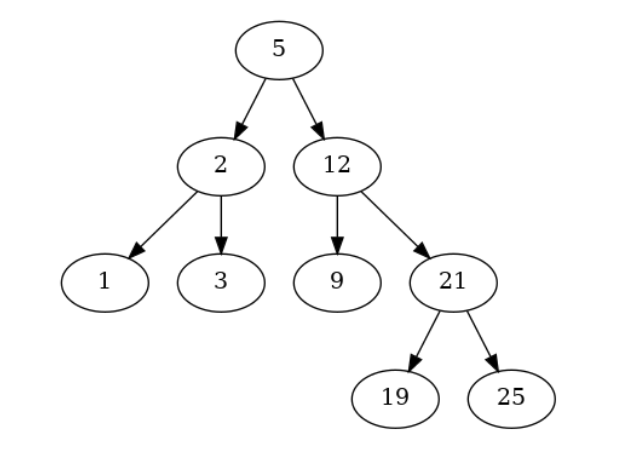
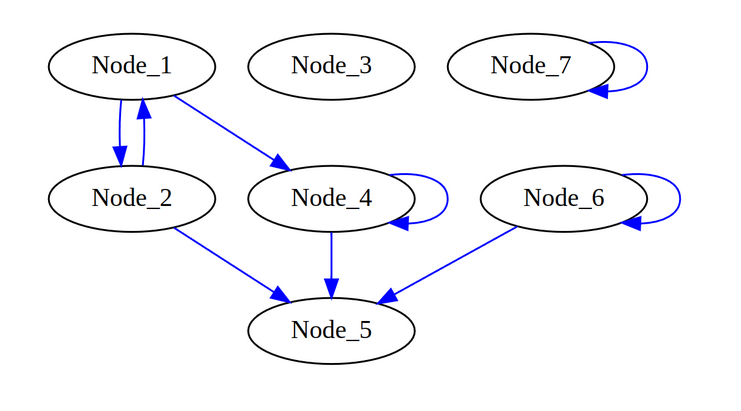

Module 2 - Past Exams¶
Exercises from past exams (both full and partial exams)
Exercises 1¶
Look at the BST implemented below:
We have the BST shown above and a number N. Our task is to find the greatest number (node) in the binary search tree that is less than or equal to N.
You are asked to implement the missing method findLargestSmallerKey(root, N). Do not modify other parts of the code!
This method finds the largest key (value of node, as integer) in the BST that is smaller than N. If such a number doesn’t exist, return -1.
Examples¶
Input : N = 24 Output : 21 (searching for 24 will be like 5->12->21)
Input : N = 4 Output : 3 (searching for 4 will be like 5->2->3)
Input : N = 10 Output : 9 (searching for 10 will be like 5->12->9)
TIPS¶
There are two key parts for the algorithm:
Part 1: traversing the tree Starting from the root, for each node we choose its left or its right child as the next step, based on a comparison between that node’s key and N: If the current node holds a key smaller than N, we proceed to its right subtree looking for larger keys. Otherwise, we proceed to its left subtree looking for smaller keys.
Part 2: finding the key During this iteration, when the current key is smaller than N, we store it as our result and keep looking for a larger key that is still smaller than N.
[8]:
class BinarySearchTree:
def __init__(self, value):
self.__data = value
self.__right = None
self.__left = None
self.__parent = None
def getValue(self):
return self.__data
def setValue(self, newValue):
self.__data = newValue
def getParent(self):
return self.__parent
def setParent(self, tree):
self.__parent = tree
def getRight(self):
return self.__right
def getLeft(self):
return self.__left
def insertRight(self, tree):
if self.__right == None:
self.__right = tree
tree.setParent(self)
def insertLeft(self, tree):
if self.__left == None:
self.__left = tree
tree.setParent(self)
def createBST(intList):
BST = None
if len(intList) > 0:
BST = BinarySearchTree(intList[0])
for el in intList[1:]:
cur_el = BST
alreadyPresent = False
prev_el = None
while cur_el != None:
prev_el = cur_el
cv = cur_el.getValue()
if cv > el:
cur_el = cur_el.getLeft()
elif cv < el:
cur_el = cur_el.getRight()
else:
alreadyPresent = True
break
if not alreadyPresent:
node = BinarySearchTree(el)
node.setParent(prev_el)
if prev_el.getValue() > el:
prev_el.insertLeft(node)
else:
prev_el.insertRight(node)
return BST
def printTree(root):
cur = root
nodes = [(cur,0)]
tabs = ""
lev = 0
while len(nodes) >0:
cur, lev = nodes.pop(-1)
if cur.getRight() != None:
print ("{}{} (r)-> {}".format("\t"*lev,
cur.getValue(),
cur.getRight().getValue()))
nodes.append((cur.getRight(), lev+1))
if cur.getLeft() != None:
print ("{}{} (l)-> {}".format("\t"*lev,
cur.getValue(),
cur.getLeft().getValue()))
nodes.append((cur.getLeft(), lev+1))
# START CODING BELOW HERE:
def findLargestSmallerKey(root, N):
result = -1
#to implement
return result
# DO NOT modify code below:
if __name__ == "__main__":
inList = [5,2,1,3,12,9,21,19,25]
BST = createBST(inList)
print("Tree:\n")
printTree(BST)
print("\nGreatest number in the BST that is less than or equal to 24 --> \n")
print(findLargestSmallerKey(BST, 24))
print("\nGreatest number in the BST that is less than or equal to 4 --> \n")
print(findLargestSmallerKey(BST, 4))
print("\nGreatest number in the BST that is less than or equal to 10 --> \n")
print(findLargestSmallerKey(BST, 10))
assert findLargestSmallerKey(BST, 24) == 21 , "It should be 21"
assert findLargestSmallerKey(BST, 4) == 3, "It should be 3"
assert findLargestSmallerKey(BST, 10) == 9, "It should be 9"
Tree:
5 (r)-> 12
5 (l)-> 2
2 (r)-> 3
2 (l)-> 1
12 (r)-> 21
12 (l)-> 9
21 (r)-> 25
21 (l)-> 19
Greatest number in the BST that is less than or equal to 24 -->
-1
Greatest number in the BST that is less than or equal to 4 -->
-1
Greatest number in the BST that is less than or equal to 10 -->
-1
---------------------------------------------------------------------------
AssertionError Traceback (most recent call last)
/home/davidebrex/Documents/ESERCITAZIONI/sciprog-ds-M2-23_24/M2_pastExam.ipynb Cell 4 line 1
<a href='vscode-notebook-cell:/home/davidebrex/Documents/ESERCITAZIONI/sciprog-ds-M2-23_24/M2_pastExam.ipynb#X15sZmlsZQ%3D%3D?line=114'>115</a> print("\nGreatest number in the BST that is less than or equal to 10 --> \n")
<a href='vscode-notebook-cell:/home/davidebrex/Documents/ESERCITAZIONI/sciprog-ds-M2-23_24/M2_pastExam.ipynb#X15sZmlsZQ%3D%3D?line=116'>117</a> print(findLargestSmallerKey(BST, 10))
--> <a href='vscode-notebook-cell:/home/davidebrex/Documents/ESERCITAZIONI/sciprog-ds-M2-23_24/M2_pastExam.ipynb#X15sZmlsZQ%3D%3D?line=118'>119</a> assert findLargestSmallerKey(BST, 24) == 21 , "It should be 21"
<a href='vscode-notebook-cell:/home/davidebrex/Documents/ESERCITAZIONI/sciprog-ds-M2-23_24/M2_pastExam.ipynb#X15sZmlsZQ%3D%3D?line=120'>121</a> assert findLargestSmallerKey(BST, 4) == 3, "It should be 3"
<a href='vscode-notebook-cell:/home/davidebrex/Documents/ESERCITAZIONI/sciprog-ds-M2-23_24/M2_pastExam.ipynb#X15sZmlsZQ%3D%3D?line=122'>123</a> assert findLargestSmallerKey(BST, 10) == 9, "It should be 9"
AssertionError: It should be 21
Exercises 2¶
Consider the DiGraphLL class provided in the code chunk below implementing a directed graph by adjacency linked list.
The graph structure is:
Please check carefully how the class is implemented since it might slightly differ from the one you have seen during the practical class.
Implement the two missing methods:
checkSelfEdge(self, node): This method checks whether a node has a “self” edge, meaning an edge pointing to itself (e.g. node 4, 6,7). This method returns a boolean value.
HINT: Remember to make sure that the node you are checking for a self edge is actually in the dictionary of nodes.
isolatedNodes(self): This method finds the nodes that are isolated from the graph (i.e. node 3, node 7), meaning those that do not have any incoming/outgoing edges. Keep in mind that a self-edge should not be considered as incoming/outgoing (i.e. Node 7 is considered isolated). This method returns a list.
HINT: A node A is isolated only if:
its dictionary of edges (inner dict) does not contain other nodes except for itself or it’s empty
node A is not present in the inner dict of other nodes of the graph (no incoming edges).
[7]:
class DiGraphLL:
def __init__(self):
self.nodes = dict()
def insertNode(self, node):
test = self.nodes.get(node, None)
if test == None:
self.nodes[node] = {}
def insertEdge(self, node1, node2, weight):
test = self.nodes.get(node1, None)
test1 = self.nodes.get(node2, None)
if test != None and test1 != None:
test = self.nodes[node1].get(node2, None)
if test != None:
exStr= "Edge {} --> {} already existing.".format(node1,node2)
raise Exception(exStr)
else:
self.nodes[node1][node2] = weight
def __len__(self):
return len(self.nodes)
def nodes(self):
return list(self.nodes.keys())
def graph(self):
return self.nodes
def __str__(self):
ret = ""
for n in self.nodes:
for edge in self.nodes[n]:
ret += "{} -- {} --> {}\n".format(str(n),
str(self.nodes[n][edge]),
str(edge))
return ret
# do not modify code ABOVE this line!
def checkSelfEdge(self, node):
"""
Return Boolean based on whether the node has a self-edge or not
"""
raise NotImplementedError
def isolatedNodes(self):
"""
Return a list of isolated nodes (see pdf)
"""
raise NotImplementedError
if __name__ == "__main__":
G = DiGraphLL()
for i in range(7):
n = "Node_{}".format(i+1)
G.insertNode(n)
G.insertEdge("Node_2", "Node_1", 7)
G.insertEdge("Node_1", "Node_2", 2)
G.insertEdge("Node_1", "Node_4", 5)
G.insertEdge("Node_2", "Node_5", 6)
G.insertEdge("Node_6", "Node_5", 3)
G.insertEdge("Node_4", "Node_5", 15)
G.insertEdge("Node_6", "Node_6", 2)
G.insertEdge("Node_7", "Node_7", 4)
G.insertEdge("Node_4", "Node_4", 4)
print("Size is: {}".format(len(G)))
print("Nodes: {}".format(G.nodes))
#PART 1
print("\nPART 1\n")
print("Check for self edge --> \n")
print("Node_10:")
print(G.checkSelfEdge("Node_10"))
print("Node_2:")
print(G.checkSelfEdge("Node_2"))
print("Node_6:")
print(G.checkSelfEdge("Node_6"))
print("Node_7:")
print(G.checkSelfEdge("Node_7"))
print("\nPART 2\n")
print("Isolated nodes:\n")
print(G.isolatedNodes())
assert(G.isolatedNodes() == ['Node_3', 'Node_7'])
Size is: 7
Nodes: {'Node_1': {'Node_2': 2, 'Node_4': 5}, 'Node_2': {'Node_1': 7, 'Node_5': 6}, 'Node_3': {}, 'Node_4': {'Node_5': 15, 'Node_4': 4}, 'Node_5': {}, 'Node_6': {'Node_5': 3, 'Node_6': 2}, 'Node_7': {'Node_7': 4}}
PART 1
Check for self edge -->
Node_10:
---------------------------------------------------------------------------
NotImplementedError Traceback (most recent call last)
/home/davidebrex/Documents/ESERCITAZIONI/sciprog-ds-M2-23_24/M2_pastExam.ipynb Cell 7 line 8
<a href='vscode-notebook-cell:/home/davidebrex/Documents/ESERCITAZIONI/sciprog-ds-M2-23_24/M2_pastExam.ipynb#X25sZmlsZQ%3D%3D?line=79'>80</a> print("Check for self edge --> \n")
<a href='vscode-notebook-cell:/home/davidebrex/Documents/ESERCITAZIONI/sciprog-ds-M2-23_24/M2_pastExam.ipynb#X25sZmlsZQ%3D%3D?line=80'>81</a> print("Node_10:")
---> <a href='vscode-notebook-cell:/home/davidebrex/Documents/ESERCITAZIONI/sciprog-ds-M2-23_24/M2_pastExam.ipynb#X25sZmlsZQ%3D%3D?line=81'>82</a> print(G.checkSelfEdge("Node_10"))
<a href='vscode-notebook-cell:/home/davidebrex/Documents/ESERCITAZIONI/sciprog-ds-M2-23_24/M2_pastExam.ipynb#X25sZmlsZQ%3D%3D?line=82'>83</a> print("Node_2:")
<a href='vscode-notebook-cell:/home/davidebrex/Documents/ESERCITAZIONI/sciprog-ds-M2-23_24/M2_pastExam.ipynb#X25sZmlsZQ%3D%3D?line=83'>84</a> print(G.checkSelfEdge("Node_2"))
/home/davidebrex/Documents/ESERCITAZIONI/sciprog-ds-M2-23_24/M2_pastExam.ipynb Cell 7 line 4
<a href='vscode-notebook-cell:/home/davidebrex/Documents/ESERCITAZIONI/sciprog-ds-M2-23_24/M2_pastExam.ipynb#X25sZmlsZQ%3D%3D?line=43'>44</a> def checkSelfEdge(self, node):
<a href='vscode-notebook-cell:/home/davidebrex/Documents/ESERCITAZIONI/sciprog-ds-M2-23_24/M2_pastExam.ipynb#X25sZmlsZQ%3D%3D?line=44'>45</a> """
<a href='vscode-notebook-cell:/home/davidebrex/Documents/ESERCITAZIONI/sciprog-ds-M2-23_24/M2_pastExam.ipynb#X25sZmlsZQ%3D%3D?line=45'>46</a> Return Boolean based on whether the node has a self-edge or not
<a href='vscode-notebook-cell:/home/davidebrex/Documents/ESERCITAZIONI/sciprog-ds-M2-23_24/M2_pastExam.ipynb#X25sZmlsZQ%3D%3D?line=46'>47</a> """
---> <a href='vscode-notebook-cell:/home/davidebrex/Documents/ESERCITAZIONI/sciprog-ds-M2-23_24/M2_pastExam.ipynb#X25sZmlsZQ%3D%3D?line=47'>48</a> raise NotImplementedError
NotImplementedError:
Exercises 3¶
Gnome Sort is based on the technique used by the standard Dutch Garden Gnome (Du.: tuinkabouter). Here is how a garden gnome sorts a line of flower pots. Basically, he looks at the flower pot next to him and the previous one; if they are in the right order he steps one pot forward, otherwise, he swaps them and steps one pot backward. Boundary conditions: if there is no previous pot, he steps forwards; if there is no pot next to him, he is done. — “Gnome Sort - The Simplest Sort Algorithm”. Dickgrune.com
The steps of the Gnome Sort algorithm are basically the following:
If you are at the start of the array then go to the right element (from arr[0] to arr[1]).
If the current array element is larger or equal to the previous array element then go one step right.
If the current array element is smaller than the previous array element then swap these two elements and go one step backwards
Repeat steps 2) and 3) till the index reaches the end of the array.
If the end of the array is reached then stop and the array is sorted.
You are asked to implement the gnome sort algorithm by filling the sort method below.
[9]:
import random
class SortingAlgorithm:
def __init__(self, data, verbose = True):
self.data = data
self.comparisons = 0
self.operations = 0
self.verbose = verbose
def getData(self):
return self.data
def getOperations(self):
return self.operations
def getComparisons(self):
return self.comparisons
def sort(self):
raise NotImplementedError
class GnomeSort(SortingAlgorithm):
def sort(self):
self.comparisons = 0
self.operations = 0
"""
to implement
"""
if __name__ == "__main__":
d = [7, 5, 10, -11 ,3, -4, 99, 1]
print("Before sorting:\n")
print(d)
gnSort = GnomeSort(d, verbose = True)
gnSort.sort()
print("After sorting:\n")
print(d)
d = []
for i in range(0,1000):
d.append(random.randint(0,1000))
gnSort = GnomeSort(d, verbose = False)
gnSort.sort()
print("\nNumber of elements: {}".format(len(d)))
print("Number of comparisons: {}".format(gnSort.getComparisons()))
print("Number of swaps: {}".format(gnSort.getOperations()))
d = []
for i in range(0,2000):
d.append(random.randint(0,1000))
gnSort = GnomeSort(d, verbose = False)
gnSort.sort()
print("\nNumber of elements: {}".format(len(d)))
print("Number of comparisons: {}".format(gnSort.getComparisons()))
print("Number of swaps: {}".format(gnSort.getOperations()))
test = True
for el in range(0,len(d)-1):
test = test and (d[el]<= d[el+1])
print("\nSorting test passed? {}".format(test))
Before sorting:
[7, 5, 10, -11, 3, -4, 99, 1]
After sorting:
[7, 5, 10, -11, 3, -4, 99, 1]
Number of elements: 1000
Number of comparisons: 0
Number of swaps: 0
Number of elements: 2000
Number of comparisons: 0
Number of swaps: 0
Sorting test passed? False
Exercises 4¶
MinNumConnection(n) that returns a list of nodes with at least n incoming edges.
edgeWeightSum() that returns the sum of the weights for all the edges in the graph. To test your implementation, the code below has already a main to build this graph:
[5]:
class DiGraphLL:
def __init__(self):
self.nodes = dict()
def insertNode(self, node):
test = self.nodes.get(node, None)
if test == None:
self.nodes[node] = {}
#print("Node {} added".format(node))
def insertEdge(self, node1, node2, weight):
test = self.nodes.get(node1, None)
test1 = self.nodes.get(node2, None)
if test != None and test1 != None:
#if both nodes exist othewise don't do anything
test = self.nodes[node1].get(node2, None)
if test != None:
exStr= "Edge {} --> {} already existing.".format(node1,node2)
raise Exception(exStr)
else:
#print("Inserted {}-->{} ({})".format(node1,node2,weight))
self.nodes[node1][node2] = weight
def __len__(self):
return len(self.nodes)
def getnodes(self):
return list(self.nodes.keys())
def __str__(self):
ret = ""
for n in self.nodes:
for edge in self.nodes[n]:
ret += "{} -- {} --> {}\n".format(str(n),
str(self.nodes[n][edge]),
str(edge))
return ret
def MinNumConnection(self, n):
"""
Methods that returns the nodes with at least n incoming edges
"""
raise NotImplementedError
def edgeWeightSum(self):
"""
Methods that returns the sum of all the edges
"""
sum_weights = 0
raise NotImplementedError
if __name__ == "__main__":
G = DiGraphLL()
for i in range(6):
n = "Node_{}".format(i+1)
G.insertNode(n)
for i in range(2,4):
n = "Node_" + str(i+1)
six = "Node_6"
n_plus = "Node_" + str((i+2) % 6)
G.insertEdge(n, n_plus,3)
G.insertEdge(n, six,2)
G.insertEdge("Node_2","Node_1",3)
G.insertEdge("Node_2","Node_4",4)
G.insertEdge("Node_5","Node_4",10)
G.insertEdge("Node_5", "Node_1", 4)
G.insertEdge("Node_5", "Node_6", 2)
G.insertEdge("Node_6", "Node_6", 2)
print(G)
#part 1
print("\n Nodes with at least n incoming edges:\n")
assert(['Node_1', 'Node_4', 'Node_5', 'Node_6'] == G.MinNumConnection(1))
print("n=1 --> "+ str(G.MinNumConnection(1)))
assert(['Node_1', 'Node_4', 'Node_6'] == G.MinNumConnection(2))
print("n=2 --> "+ str(G.MinNumConnection(2)))
assert(['Node_4' , 'Node_6'] == G.MinNumConnection(3))
print("n=3 --> "+ str(G.MinNumConnection(3)))
assert(['Node_6'] == G.MinNumConnection(4))
print("n=4 --> "+ str(G.MinNumConnection(4)))
assert([] == G.MinNumConnection(5))
print("n=5 --> "+ str(G.MinNumConnection(5)))
#part 2
print("\nSum of all weights: ")
print(G.edgeWeightSum())
assert(35 == G.edgeWeightSum())
Node_2 -- 3 --> Node_1
Node_2 -- 4 --> Node_4
Node_3 -- 3 --> Node_4
Node_3 -- 2 --> Node_6
Node_4 -- 3 --> Node_5
Node_4 -- 2 --> Node_6
Node_5 -- 10 --> Node_4
Node_5 -- 4 --> Node_1
Node_5 -- 2 --> Node_6
Node_6 -- 2 --> Node_6
Nodes with at least n incoming edges:
---------------------------------------------------------------------------
NotImplementedError Traceback (most recent call last)
/home/davidebrex/Documents/ESERCITAZIONI/sciprog-ds-M2-23_24/M2_pastExam.ipynb Cell 13 line 8
<a href='vscode-notebook-cell:/home/davidebrex/Documents/ESERCITAZIONI/sciprog-ds-M2-23_24/M2_pastExam.ipynb#X35sZmlsZQ%3D%3D?line=81'>82</a> #part 1
<a href='vscode-notebook-cell:/home/davidebrex/Documents/ESERCITAZIONI/sciprog-ds-M2-23_24/M2_pastExam.ipynb#X35sZmlsZQ%3D%3D?line=82'>83</a> print("\n Nodes with at least n incoming edges:\n")
---> <a href='vscode-notebook-cell:/home/davidebrex/Documents/ESERCITAZIONI/sciprog-ds-M2-23_24/M2_pastExam.ipynb#X35sZmlsZQ%3D%3D?line=83'>84</a> assert(['Node_1', 'Node_4', 'Node_5', 'Node_6'] == G.MinNumConnection(1))
<a href='vscode-notebook-cell:/home/davidebrex/Documents/ESERCITAZIONI/sciprog-ds-M2-23_24/M2_pastExam.ipynb#X35sZmlsZQ%3D%3D?line=84'>85</a> print("n=1 --> "+ str(G.MinNumConnection(1)))
<a href='vscode-notebook-cell:/home/davidebrex/Documents/ESERCITAZIONI/sciprog-ds-M2-23_24/M2_pastExam.ipynb#X35sZmlsZQ%3D%3D?line=85'>86</a> assert(['Node_1', 'Node_4', 'Node_6'] == G.MinNumConnection(2))
/home/davidebrex/Documents/ESERCITAZIONI/sciprog-ds-M2-23_24/M2_pastExam.ipynb Cell 13 line 4
<a href='vscode-notebook-cell:/home/davidebrex/Documents/ESERCITAZIONI/sciprog-ds-M2-23_24/M2_pastExam.ipynb#X35sZmlsZQ%3D%3D?line=42'>43</a> def MinNumConnection(self, n):
<a href='vscode-notebook-cell:/home/davidebrex/Documents/ESERCITAZIONI/sciprog-ds-M2-23_24/M2_pastExam.ipynb#X35sZmlsZQ%3D%3D?line=43'>44</a> """
<a href='vscode-notebook-cell:/home/davidebrex/Documents/ESERCITAZIONI/sciprog-ds-M2-23_24/M2_pastExam.ipynb#X35sZmlsZQ%3D%3D?line=44'>45</a> Methods that returns the nodes with at least n incoming edges
<a href='vscode-notebook-cell:/home/davidebrex/Documents/ESERCITAZIONI/sciprog-ds-M2-23_24/M2_pastExam.ipynb#X35sZmlsZQ%3D%3D?line=45'>46</a> """
---> <a href='vscode-notebook-cell:/home/davidebrex/Documents/ESERCITAZIONI/sciprog-ds-M2-23_24/M2_pastExam.ipynb#X35sZmlsZQ%3D%3D?line=46'>47</a> raise NotImplementedError
NotImplementedError: